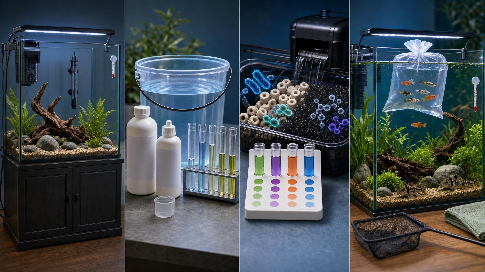
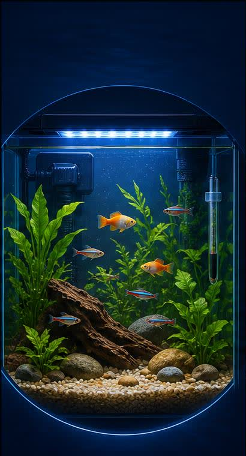

Choose the tank location
Pick a level, sturdy location away from windows, vents, doors, and heavy vibration.
- Confirm the stand supports the filled weight
- Leave room for cords, filter access, and water changes
- Avoid direct sun to reduce algae swings
 The Hidden ReefAquariums · Fish · Coral · Ponds
The Hidden ReefAquariums · Fish · Coral · Ponds
Set up the aquarium before you buy fish. This guide walks through the first shopping trip, the first fill, the cycling period, and the first livestock plan.

The goal is a stable, testable system before the tank gets stocked.
Pick a level, sturdy location away from windows, vents, doors, and heavy vibration.
Get the life-support gear before livestock: filter, heater, lid, light, thermometer, and water tools.
Treat tap water, start circulation, set temperature, and test before fish go in.
The filter needs time to grow bacteria that process waste. Stocking too quickly is the usual beginner failure point.
Livestock comes last. Bring home the system pieces first so the aquarium has time to stabilize.
The basic structure should be stable, covered, and easy to service.
These keep oxygen, temperature, and biological filtration stable.
Testing turns guesswork into a visible trend before animals are at risk.
Small tools make the first month easier and prevent household cross-contamination.

Once tests are stable, start with a small number of hardy, compatible fish. Wait, feed lightly, retest, and only add more once the tank proves it can handle the new waste load.